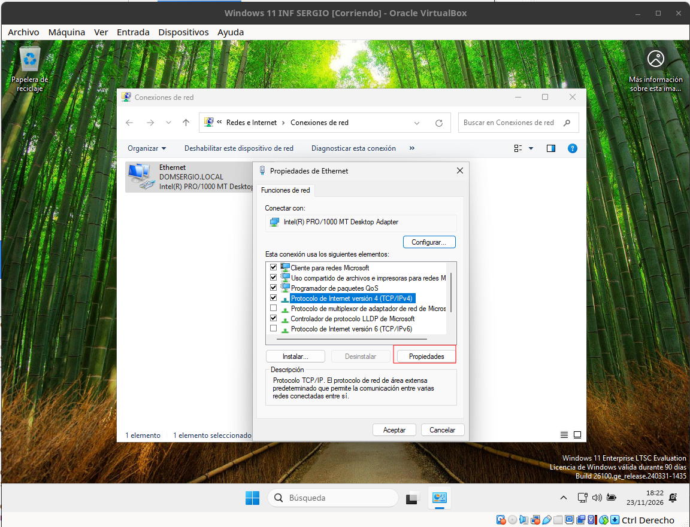

Unir un equipo Windows 11 a un dominio
Hasta ahora, cuando alguien iniciaba sesión en un equipo, el propio equipo comprobaba su usuario y su contraseña. Unir un equipo a un dominio cambia quién decide: a partir de ese momento el controlador de dominio valida las cuentas del dominio. El equipo pasa a ser «socio del club»: tiene un carnet (su cuenta de equipo en Active Directory) y acepta las normas del club.
Unir un equipo parece un solo paso, pero casi todos los fallos vienen de lo que hay que preparar antes. Este apartado sigue siempre la misma secuencia:
- Conectar el cliente a la red correcta.
- Configurar su red, con el DNS apuntando al controlador.
- Verificar la conectividad.
- Ponerle nombre.
- Unirlo al dominio y verificar.
- Iniciar sesión y distinguir cuenta del equipo de cuenta del dominio.
Requisitos previos
- [ ] El cliente tiene instalado Windows 11 Pro, Enterprise o Education. Home no puede unirse.
- [ ] El servidor ya es controlador de dominio y su DNS funciona.
- [ ] La regla de eco ICMPv4 está habilitada en el servidor.
- [ ] La hora del cliente es correcta.
Para comprobar la edición: Configuración → Sistema → Información.
1. Red en VirtualBox
El cliente debe estar en la misma red que el servidor. Con la MV apagada:
- Configuración → Red → Adaptador 1.
- Conectado a: Red interna.
- Nombre: el mismo que tiene el adaptador interno del servidor (se distingue entre mayúsculas y minúsculas).
- Comprueba que Cable conectado está marcado.
Un solo adaptador
Si el servidor hace de router (apartado anterior), el cliente solo necesita un adaptador, en la red interna. Si además dejas uno en NAT, el cliente tendrá dos puertas de enlace y la conectividad será errática.
Los modos de red se explican con detalle en la UD05.
2. Red en Windows
Dentro del cliente: Windows + R → ncpa.cpl → clic derecho sobre el adaptador → Propiedades → Protocolo de Internet versión 4 (TCP/IPv4) → Propiedades.



| Parámetro | Valor |
|---|---|
| IP | Una libre del rango de la red del servidor |
| Máscara | La misma que el servidor |
| Puerta de enlace | La IP del servidor en esa red (si hace de router) |
| DNS preferido | La IP del controlador de dominio |
El DNS es lo que hace posible unirse
El cliente encuentra el dominio preguntando al DNS. Si el DNS es el router o uno público, no sabrá dónde está el controlador y la unión fallará, aunque todo lo demás esté perfecto.
Para repasar qué es cada parámetro, consulta el Apéndice A: Recordatorio de red.
3. Verificar la conectividad
Desde una ventana de símbolo del sistema del cliente:
| Comprobación | Comando | Qué debe pasar |
|---|---|---|
| IP recibida | ipconfig /all |
IP, máscara, puerta de enlace y DNS correctos |
| Llegada al servidor | ping <IP del servidor> |
Responde |
| Resolución del dominio | nslookup techsolutions.lan |
Devuelve la IP del controlador |
| Resolución por nombre | ping techsolutions.lan |
Responde con la IP del controlador |
El ping solo prueba la red; el nslookup prueba el dominio
Si el ping por IP funciona pero nslookup del dominio falla, el problema es el DNS. Es el caso más frecuente.
Servidor: UnKnown en el nslookup
Es normal si el DNS no tiene zona de búsqueda inversa. Lo importante es que la dirección del dominio sea la del controlador.
El ping solo en un sentido
Es habitual que el cliente llegue al servidor, pero el servidor no llegue al cliente. No es una avería:
- El servidor tiene habilitada la regla de eco, así que contesta.
- El cliente Windows 11 la tiene desactivada por defecto, así que no contesta.
Para una unión al dominio basta con que el cliente llegue al servidor. Si quieres ping en ambos sentidos, habilita la regla de eco ICMPv4 también en el cliente (apartado de configuración básica).
4. Poner nombre al equipo
Windows asigna un nombre aleatorio (del tipo DESKTOP-4F8K2LQ). Antes de unirlo, elige un nombre propio:
- Máximo 15 caracteres, solo letras, números y guiones.
- Único en el dominio.
- Que identifique el equipo (por ejemplo, el puesto o el usuario).
Pasos: Configuración → Sistema → Información → Cambiar el nombre de este equipo, o desde sysdm.cpl. Reinicia.
En los ejemplos de este apartado el cliente se llama PCDEMO.
5. Unir al dominio
- Windows + R →
sysdm.cpl. - Pestaña Nombre de equipo → Cambiar…
- En Miembro de, selecciona Dominio y escribe el nombre DNS:
techsolutions.lan. - Aparece una ventana pidiendo credenciales: escribe una cuenta del dominio con permiso para unir equipos, con el dominio por delante:
TECHSOLUTIONS\Administrador. - Debe aparecer «Bienvenido al dominio techsolutions.lan».
- Reinicia.
Veamos el proceso en el siguiente vídeo:
Otra forma: desde Configuración
Configuración → Cuentas → Acceso a trabajo o escuela → Conectar → Unir este dispositivo a un dominio de Active Directory local. Es el mismo proceso con otra interfaz.
6. Verificar que se ha unido
En el cliente
| Qué | Cómo | Resultado |
|---|---|---|
| Dominio del equipo | sysdm.cpl o Configuración → Sistema → Información |
Aparece techsolutions.lan |
| Dominio de la sesión | echo %USERDOMAIN% |
El nombre NetBIOS del dominio, tras iniciar sesión con una cuenta del dominio |
| Quién ha validado el inicio de sesión | echo %LOGONSERVER% |
El nombre del controlador de dominio |
En el servidor
| Qué | Cómo | Resultado |
|---|---|---|
| Cuenta del equipo | Usuarios y equipos de Active Directory → Computers | Aparece PCDEMO |
| Registro DNS | Herramientas → DNS → zona del dominio | Aparece un registro de host (A) para PCDEMO |
Si el registro DNS no aparece
En el cliente, ejecuta ipconfig /registerdns y actualiza la vista del DNS.
7. Iniciar sesión: cuenta del equipo o del dominio
Tras el reinicio, en la pantalla de inicio de sesión hay que elegir Otro usuario. Aquí aparece la confusión más habitual, porque en el equipo existen dos tipos de cuentas:
| Tipo | Quién la guarda | Quién valida la contraseña |
|---|---|---|
| Cuenta local | El propio equipo | El propio equipo |
| Cuenta de dominio | El controlador de dominio | El controlador de dominio |
Y pueden llamarse igual. El ejemplo clásico:
| Lo que escribes | Qué cuenta es | Se valida en |
|---|---|---|
PCDEMO\Administrador o .\Administrador |
Administrador local del equipo | El propio equipo |
TECHSOLUTIONS\Administrador |
Administrador del dominio | El controlador de dominio |
Administrador@techsolutions.lan |
Administrador del dominio (otro formato) | El controlador de dominio |
Administrador (sin nada más) |
Ambiguo | Depende del contexto |
Al escribir solo el nombre, cambias el significado
Si escribes solo Administrador, no le estás diciendo a Windows de quién es esa cuenta, y suele interpretarla como la cuenta del propio equipo. Para entrar con una cuenta del dominio hay que indicarlo siempre: DOMINIO\usuario o usuario@dominio. Para una cuenta local, NOMBREEQUIPO\usuario o .\usuario.
El texto «Iniciar sesión en:»
Bajo el cuadro de usuario Windows puede mostrar «Iniciar sesión en: …», indicando a qué se refiere un usuario sin prefijo. Es un indicador útil, pero no te fíes de él: escribe siempre el prefijo.
Demostración: comprobar con qué cuenta has entrado
Inicia sesión con cada una y ejecuta en el símbolo del sistema:
| Comando | Cuenta local | Cuenta de dominio |
|---|---|---|
whoami |
pcdemo\administrador |
techsolutions\administrador |
echo %USERDOMAIN% |
PCDEMO |
TECHSOLUTIONS |
echo %LOGONSERVER% |
\\PCDEMO |
\\ + nombre del controlador |
Además, cada cuenta tiene su propio perfil: al iniciar sesión por primera vez con la cuenta de dominio se crea una carpeta nueva en C:\Users. Si ya existía una con el mismo nombre (la de la cuenta local), el perfil del dominio puede aparecer con el nombre del dominio como sufijo, algo como Administrador.TECHSOLUTIONS.
Preparar la demostración: el Administrador local de Windows 11 está desactivado
En un cliente Windows 11, la cuenta integrada Administrador está desactivada por defecto. Para poder enseñar el contraste con DOMINIO\Administrador, el profesor puede activarla solo para la demostración, desde un símbolo del sistema como administrador:
El segundo comando pide la contraseña (sin mostrarla). Al terminar, desactívala de nuevo:
En un equipo real esta cuenta se deja desactivada: es un blanco habitual de ataques. Si prefieres no activarla, el contraste también se puede hacer con el usuario local creado durante la instalación de Windows (por ejemplo, PCDEMO\alumno).
8. Qué cambia al estar en un dominio
| Qué | Cómo queda |
|---|---|
| Cuentas locales | Siguen existiendo: se puede iniciar sesión con ellas aunque el controlador esté apagado |
| Cuentas del dominio | Los usuarios del dominio pueden iniciar sesión en el equipo |
| Administradores | Los administradores del dominio se convierten en administradores locales del equipo |
| Controlador apagado | Los usuarios que ya habían entrado antes pueden hacerlo con credenciales en caché; los nuevos, no |
| Políticas | El equipo empieza a recibir las directivas de grupo del dominio (UD siguientes) |
¿Quién puede unir equipos al dominio?
Los administradores del dominio, sí. Pero por defecto un usuario normal del dominio puede unir hasta 10 equipos. Es una configuración que conviene restringir en un entorno real. Verifica el valor en la documentación de Microsoft para tu versión.
9. Salir del dominio
- Windows + R →
sysdm.cpl→ Cambiar… - Selecciona Grupo de trabajo, escribe un nombre y acepta.
- Pide credenciales y reinicia.
- Hace falta conocer la contraseña de un administrador local del equipo, porque con la cuenta del dominio ya no se podrá entrar.
La cuenta del equipo no desaparece
En el servidor, el objeto del equipo sigue en Active Directory, deshabilitado. Si el equipo no va a volver, bórralo en Usuarios y equipos de Active Directory.
Clones e instantáneas
- Clona el cliente antes de unirlo. Un clon de un equipo ya unido tiene la misma identidad que el original, y dos equipos con el mismo nombre en un dominio entran en conflicto.
- Si restauras una instantánea de un cliente ya unido puede aparecer «La relación de confianza entre esta estación de trabajo y el dominio principal ha fallado», porque la contraseña interna del equipo ha retrocedido. Se soluciona saliendo del dominio y volviendo a unirlo.
Errores típicos
| Síntoma | Causa probable | Solución |
|---|---|---|
| «No se pudo contactar con un controlador de dominio» | DNS del cliente incorrecto | Poner la IP del controlador como DNS |
nslookup del dominio falla pero el ping por IP funciona |
DNS | Revisar el DNS del cliente y que el servicio DNS del servidor esté activo |
No hay ping al servidor |
Red interna con nombre distinto, IP de otro rango o regla ICMP deshabilitada | Revisar red de VirtualBox, IP y firewall del servidor |
| No aparece la opción de dominio | Windows 11 Home | Usar Pro, Enterprise o Education |
| La unión falla con credenciales correctas | Hora desajustada | Corregir hora y zona horaria |
| «La cuenta ya existe» o conflicto de nombre | Otro equipo con el mismo nombre | Cambiar el nombre del cliente |
| No se puede iniciar sesión con el usuario del dominio | Se ha escrito sin prefijo y se interpreta como cuenta local | Usar DOMINIO\usuario o usuario@dominio |
| Entra, pero con un perfil vacío distinto del esperado | Es el perfil de la cuenta del dominio, otro distinto del local | Es normal: cada cuenta tiene el suyo |
| «La relación de confianza… ha fallado» | Instantánea restaurada | Salir del dominio y volver a unir |
Lista de comprobación
- [ ] El cliente es Windows 11 Pro (o Enterprise/Education).
- [ ] Está en la misma red interna que el servidor, con un solo adaptador.
- [ ] Su DNS es la IP del controlador de dominio.
- [ ]
pingal servidor ynslookupdel dominio funcionan. - [ ] Tiene nombre propio y se ha reiniciado.
- [ ] Se ha unido al dominio y aparece en Computers y en el DNS del servidor.
- [ ] Sabes entrar con
DOMINIO\usuarioy conNOMBREEQUIPO\usuario, y distinguir una de otra conwhoami.
Con PowerShell (opcional)
Para alumnado más avanzado
Todo el proceso se puede hacer desde la consola. No es necesario para seguir el módulo.
| Tarea | Comando |
|---|---|
| Cambiar el nombre | Rename-Computer -NewName "PCDEMO" -Restart |
| Poner el DNS | Set-DnsClientServerAddress -InterfaceAlias "Ethernet" -ServerAddresses 192.168.1.10 |
| Unir al dominio | Add-Computer -DomainName "techsolutions.lan" -Credential "TECHSOLUTIONS\Administrador" -Restart |
| Ver el dominio del equipo | (Get-CimInstance Win32_ComputerSystem).Domain |
| Salir del dominio | Remove-Computer -WorkgroupName "WORKGROUP" -Restart |
Preguntas de lectura
- ¿Por qué
Add-Computernecesita-Credential? - ¿Qué devolvería el cuarto comando en un equipo que no está en ningún dominio?
- ¿Qué pasaría si ejecutas
Remove-Computersin conocer la contraseña de un administrador local?
Resumen
- Unir un equipo al dominio hace que el controlador valide las cuentas del dominio.
- La secuencia es: red → DNS apuntando al controlador → verificar → nombre → unir → verificar.
- El DNS del cliente debe ser el controlador: es la causa de casi todos los fallos.
- En el equipo conviven cuentas locales y cuentas de dominio, y pueden llamarse igual.
- Para entrar con una cuenta del dominio hay que escribir
DOMINIO\usuarioousuario@dominio; sin prefijo, Windows suele entender una cuenta local. - Con
whoami,%USERDOMAIN%y%LOGONSERVER%se comprueba con qué cuenta se ha entrado.